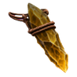
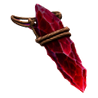
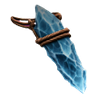
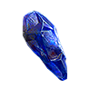
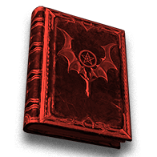
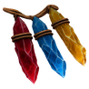
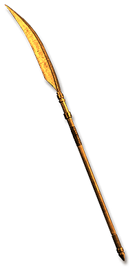
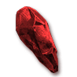

Pinnacle · Hell only
The Convergence
Fight all five Unborn together in the Black Abyss.
Who5 Unborn at once
WhereThe Black Abyss
Area level109
Way outTown Portal
The way in
Collect the five Echo trophies in Hell. Cube them together in Harrogath to open the Black Abyss; the trophies are consumed.


The fight
 Five at once
Five at onceOne island · five separate life bars
 Fresh fight
Fresh fightKilling their counterparts elsewhere does not remove the Unborn
 Reinforcements
ReinforcementsMephisto, Diablo and Baal each bring two named guards
Mephisto, Hatred Unborn
Physical 20%Magic 75%Fire 75%Cold 75%Poison immune
Andariel, Anguish Unborn
Physical 66%Magic 75%Fire 75%Cold 75%Lightning 75%Poison immune
Duriel, Pain Unborn
Physical 50%Magic 75%Fire 75%Lightning 75%Poison 75%Diablo, Terror Unborn
Physical 50%Magic 75%Poison 75%Baal, Destruction Unborn
Physical 50%Magic 75%Poison 75%Echoes and trophies
What they drop
Each Unborn rolls the loot below once per kill in Hell.
UniquesHell · chance per kill · one player, 0% magic find
 The Faint MarkEach Unborn · Hell · 5%
The Faint MarkEach Unborn · Hell · 5% The Uneasy DeadEach Unborn · Hell · 2.5%
The Uneasy DeadEach Unborn · Hell · 2.5% The Black SeedEach Unborn · Hell · 2%
The Black SeedEach Unborn · Hell · 2% The Blood DebtEach Unborn · Hell · 1.267%
The Blood DebtEach Unborn · Hell · 1.267%
Baal's DestructionEach Unborn · Hell · 0.8% (1 in 125)
Diablo's TerrorEach Unborn · Hell · 0.8% (1 in 125)
Mephisto's HatredEach Unborn · Hell · 0.8% (1 in 125)
Facet of the Prime EvilsEach Unborn · Hell · 0.3333% (1 in 300)
Litany of TathametEach Unborn · Hell · 0.3333% (1 in 300)
Spite of the ThreeEach Unborn · Hell · 0.3333% (1 in 300)
The Hellforge WarbannerEach Unborn · Hell · 0.3333% (1 in 300)
Worldstone RemnantEach Unborn · Hell · 0.3333% (1 in 300) AnnihilusDiablo, Terror Unborn · Hell · 0.2% (1 in 500)
AnnihilusDiablo, Terror Unborn · Hell · 0.2% (1 in 500)